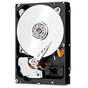

Программы для восстановления данных
 Одна из самых неприятных проблем, рано или поздно возникающих у пользователей ПК – необходимость восстановления утерянной информации. Файлы могут быть удалены случайно, из-за программных сбоев, некорректного сохранения или закрытия программы до окончания сохранения. Также файлы удаляются из-за действия вирусов, некорректного отключения компьютера во время работы, автоматической очистки корзины. Решить проблему помогают программы для восстановления данных с жесткого диска.
Рекомендуем ознакомиться с разделом - восстановление данных с жесткого диска в лаборатории
Чистая комната класса 100

Бесплатная диагностика

Современное оборудование
- приложения не всегда могут восстановить все данные. Успех работы зависит от времени. Чем раньше владелец ПК обнаружил пропажу, тем лучше. Файлы не исчезают с диска мгновенно, но со временем поверх них записываются новые сведения. Даже самой мощной утилите не удастся восстановить данные из уже перезаписанного сектора. Давно утраченные файлы можно вернуть только если компьютером не пользуются очень активно;
- восстановление информации при помощи утилит возможно только если сам hard disk полностью исправен. Если при включении компьютера раздаются нестандартные звуки: треск, щелчки, писк, это значит, что система не может прочесть данные из-за неисправности носителя. В этом случае пользоваться программами для восстановления не рекомендуется – они могут только ухудшить ситуацию, повредить файлы безвозвратно. Возврат утерянной информации при повреждении жесткого диска лучше доверить мастерам из сервисного центра. Они проведут диагностику, устранят поломку диска и вернут все пропавшие папки. Если починить сам винчестер не удастся, мастера смогут вытащить с него информацию, сохранив ее на новом накопителе.
Программа для восстановления файлов HDD Recuva
- В софте есть детальная справка, объясняющая, какие действия потребуются на каждом конкретном этапе.
- Русскоязычный интерфейс значительно облегчает реанимацию.
- Программа подходит для разных вариантов Windows: ХР, Vista, версий 7, 8, 10.
- Recuva работает с жесткими дисками, съемными картами памяти, USB-накопителями.
- Можно восстанавливать фото, текстовые документы, работать с системами FAT, NTFS.
- Не занимает много места на диске.
- Есть переносной вариант. Утилиту можно скачать на флеш-накопитель, подключить флешку к любому компьютеру, на котором надо реанимировать данные, и запустить. Устанавливать ее на компьютер не надо – она будет работать с флешки, не занимая места в памяти ПК.
Работа с Рекувой проходит по такому алгоритму:
- после запуска появляется Помощник, предлагающий выбрать тип файла: картинку, музыку, документы, видео и т. д. Если тип точно известен, надо отметить нужный пункт. Если тип неизвестен или надо найти данные разного типа, есть пункт «Прочее», занимающийся поиском всех утраченных папок. Выбираете пункт, жмете «Далее»;
- выбираете место, где хранился документ. Если точно известно имя папки, можно его указать. По умолчанию стоит пункт «Точно неизвестно». При выборе его утилита сканирует весь накопитель;
- Recuva готова начать работу, о чем сообщает в следующем окне. Можно провести простой анализ или углубленный (для этого отметьте галочкой соответствующий пункт);
- начинается сканирование, занимающее некоторое время. После его окончания в окне покажется список возможных к восстановлению документов. Отметьте нужные галочкой;
- далее надо указать путь для восстановления. Не стоит восстанавливать сведения на тот же носитель, с которого они исчезли. Лучше заранее подключить к компу флешку или другой винчестер.
Утилита для восстановления данных Hetman Partition Recovery
Partition Recovery выпускается в двух вариантах: инсталлируемом и портативном. Второй вариант не требует установки на ПК, его можно записать на флеш-носитель и подключить к компьютеру с любой ОС. В этом случае во время работы софт не занимает места в памяти компьютера.
Приложение просто в работе, есть встроенный пошаговый помощник. Реанимирует документы, фотографии, видео, удаленные через Корзину или без ее использования. Восстанавливает данные с сохранением иерархии (не просто отдельные файлы, а целые папки). Перед сохранением файл можно просмотреть или прослушать. Это поможет выбрать для сохранения лучшую версию данных.
Partition Recovery предусматривает разные варианты экспорта возвращенных документов: с сохранением на HDD, флеш-накопитель, создание виртуального образа, передача по сети на другой компьютер (по FTP). Алгоритм работы софта:
- установить, запустить;
- выбрать раздел для работы;
- выбрать тип сканирования (быстрое или полное);
- отметить требующие восстановления документы;
- выбрать путь для экспорта.
Софт для восстановления данных R-Studio
- утилита для восстановления данных работает по сети, что помогает возвращать информацию даже в том случае, если не загружается операционная система;
- работает с массивами;
- имеет удобный русскоязычный интерфейс;
- есть возможность реанимировать все удаленные за определенный период времени данные;
- возможен предварительный просмотр найденной информации.
Софт для восстановления файлов HDD Disk Drill
- Хороший инструмент для возвращения утраченной информации с разных типов носителей.
- оддерживает разные виды файловых систем.
- Работает даже с физически поврежденными носителями.
- Восстанавливает сведения после случайного удаления, форматирования накопителя, сбоев в работе ОС, последствий вирусной атаки.
- Работает с текстовой информацией, аудиофайлами, фотографиями.
Минус утилиты: отсутствие портативного варианта. Софт придется устанавливать на компьютер. Если поврежденный диск не включается, его надо будет подключать к другому ПК. Существует еще много программ для восстановления данных с жесткого диска. Но несмотря на богатство предоставляемых ими возможностей, пользователям не всегда удается вернуть ценную информацию в полном объеме. Если работа с одной утилитой не привела к желаемому результату, нецелесообразно пытаться самостоятельно использовать другие, особенно если пропали действительно важные сведения. Лучше как можно быстрее отключить ПК и обратиться к мастерам из сервисного центра. Многократные безуспешные попытки самостоятельного восстановления файлов могут привести к их окончательной потере. Мастера проведут диагностику, выявят проблему, применят специальные приложения, которых нет в широком доступе. Это значительно повышает шансы на возвращение ценных сведений.
Адаптеры для микросхем позволяют нам восстановить любую флешку
.png "title")
.png "title")
Как производится восстановление данных с жесткого диска
Чистая комната класса 100
Бесплатная диагностика
Современное оборудование

Лаборатория №1 в Москве

Комплексы PC-3000

Восстановление RAID массивов

Все диски доноры в наличии

Сразу приступаем к работе
Лучшие специалисты по восстановлению данных в Москве

Александр Гуревич
Инженер
опыт работы 14 лет
Александр Гуревич
Инженер
опыт работы 14 лет
Александр Гуревич
Инженер
опыт работы 14 лет
Александр Гуревич
Инженер
опыт работы 14 лет
Александр Гуревич
Инженер
опыт работы 14 лет
Александр Гуревич
Инженер
опыт работы 14 лет
Александр Гуревич
Инженер
опыт работы 14 лет
Александр Гуревич
Инженер
опыт работы 14 лет
Нам доверяют восстановление данных


Узнайте больше о восстановлении данных - наш YouTube канал
На YouTube канале мы подробно рассказываем и показываем как происходят процессы восстановления данных с жестких дисков, RAID массивов, флешек, карт памяти и других носителей в нашей лаборатории. Для чего нужны запчасти диски доноры при восстановлении информации. Так же приводим обзоры и статистику. Рейтинг надежности жестких дисков основных производителей, что поможет вам выбрать лучший новый жесткий диск для ваших задач. Или просто быть в курсе событий и последних новостей в области восстановления данных. Подписывайтесь и узнавайте больше о восстановлении данных.
Закажите восстановление данных прямо сейчас

Если у вас нет возможности приехать к нам - Закажите бесплатную доставку курьером по Москве и Московской области и получите скидку 15% на восстановление данных. Ежедневно можно заказать доставку нашим штатным курьером. Который привезет жесткий диск к нам в сервисный центр на диагностику и восстановление данных. Возможна и обратная доставка из лаборатории до указанного вами адреса. Перевозка осуществляется в специальной сумке, предназначенной для безопасной транспортировки дисков. Курьер может приехать к вам домой или в офис в удобное время